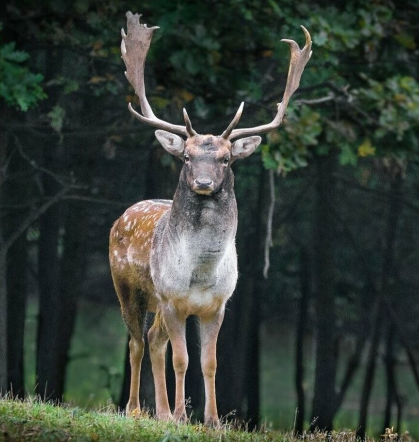

사슴
당신은 조용하고 차분하며 친근하고 책임감이 있으며 헌신적인 사람이군요
다른 사람의 사정을 고려하며 자신과 타인의 감정에 민감하며,
일 처리에 있어서 현실감각을 갖고 실제적이고 조직적으로 처리합니다.
경험을 통해서 자신이 틀렸다고 인정할 때까지 어떠한 난관이 있어도 꾸준히 밀고 나가는 형이네요.
하지만 의존적이고 독창성이 요구되며
타인에게 자신을 충분히 명확하게 표현하는 것이 필요할 때가 있으므로 주의하세요.
당신의 유형은 꽤 많은 유형으로, 전 세계 인구의 대략 13%가 이 유형에 속해있다고 합니다.
